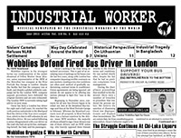

Submitted on Thu, 08/01/2013 - 11:30pm
 MINNEAPOLIS—Canvass workers from the non-profit mobile food shelf Sisters’ Camelot have formed a foodsharing organization of their own, the North Country Food Alliance. The canvassers went public to their bosses, the Sisters’ Camelot managing collective, as a union affiliated with the Industrial Workers of the World (IWW) at the end of February. On March 1st, the managing collective refused to negotiate with the union causing the workers to go on strike. Three days later management fired one of the striking canvassers, a firing that was later found to be illegal by the National Labor Relations Board (NLRB). Rather than accepting the NLRB’s settlement offer, the Sisters’ Camelot managing collective chose instead to work with a national union-busting law firm, FordHarrison, to fight the decision before a administrative law judge. Both sides are awaiting the verdict from the trial.
MINNEAPOLIS—Canvass workers from the non-profit mobile food shelf Sisters’ Camelot have formed a foodsharing organization of their own, the North Country Food Alliance. The canvassers went public to their bosses, the Sisters’ Camelot managing collective, as a union affiliated with the Industrial Workers of the World (IWW) at the end of February. On March 1st, the managing collective refused to negotiate with the union causing the workers to go on strike. Three days later management fired one of the striking canvassers, a firing that was later found to be illegal by the National Labor Relations Board (NLRB). Rather than accepting the NLRB’s settlement offer, the Sisters’ Camelot managing collective chose instead to work with a national union-busting law firm, FordHarrison, to fight the decision before a administrative law judge. Both sides are awaiting the verdict from the trial.
Submitted on Thu, 08/01/2013 - 10:35am
Donate to the Mobile Rail Workers Union Strike Fund!

From July 26th to 29th, Management at Mobile Rail Solutions fired three workers actively engaged in unionizing efforts. The termination of these organizers is a direct attack on their Union drive and apparent retaliation for their recent OSHA filings. Management then threatened to continue firing workers showing no respect for their employees or labor law.
In response, the workers have self-organized a strike and will be picketing at Union Pacific's Global 1 location in Chicago, Illinois. They demand a meeting with Mobile Rail's general manager to discuss the recent wave of Unfair Labor Practices and for the reinstatement of their three fired workers. With most workers coming to the picket line, they expect locomotive servicing will come to a halt.
Submitted on Mon, 07/29/2013 - 8:49am
 On Friday, Mobile Rail management fired two workers, Eric and Dwayne, and claimed that they will be firing all non-CDL carrying employees. We see this as a clear attack on the Union and a direct retaliation for the worker’s recent OSHA complaints. For years, Mobile Rail has deployed its locomotive service trucks with teams of one driver accompanied by one non-CDL helper. The attempt to break apart these teams not only is meant to destroy the organizing efforts but also creates an extremely hazardous situation for all workers. By changing to a single-driver operation, there will be no protections in the case that the one driver suffers heat stroke, is injured by faulty machinery, or is a victim of a train accident. We are immediately calling upon all IWW members and supporters to call Mobile Rail Management and politely but firmly demand they rehire both Eric and Dwayne. We ask that you further demand that all drivers are accompanied by a helper. You can reach Mobile Rail Solutions management at 847-551-9767 or call Tim, the general manager, directly at 224-622-9201.
On Friday, Mobile Rail management fired two workers, Eric and Dwayne, and claimed that they will be firing all non-CDL carrying employees. We see this as a clear attack on the Union and a direct retaliation for the worker’s recent OSHA complaints. For years, Mobile Rail has deployed its locomotive service trucks with teams of one driver accompanied by one non-CDL helper. The attempt to break apart these teams not only is meant to destroy the organizing efforts but also creates an extremely hazardous situation for all workers. By changing to a single-driver operation, there will be no protections in the case that the one driver suffers heat stroke, is injured by faulty machinery, or is a victim of a train accident. We are immediately calling upon all IWW members and supporters to call Mobile Rail Management and politely but firmly demand they rehire both Eric and Dwayne. We ask that you further demand that all drivers are accompanied by a helper. You can reach Mobile Rail Solutions management at 847-551-9767 or call Tim, the general manager, directly at 224-622-9201.
Submitted on Sun, 07/28/2013 - 1:57pm
On Friday the 26th, Management at Mobile Rail Solutions fired Eric and Dwayne, two non-CDL service-helpers who are active participants in the ongoing Unionization effort. They further alluded to the possibility of firing all remaining non-CDL carrying employees. While management claims this is part of a restructuring, we believe that the firings constitute a broad attack on protected organizing activity and most likely a direct retaliation against protected OSHA complaints recently filed across several Mobile Rail locations.
Submitted on Sat, 07/13/2013 - 2:16am
Headlines:
- Mass Protests, Social Unrest Engulf Turkey
- Sisters’ Camelot Management Admits To Dishonesty About Fired Worker
- Relief: Solidarity Is Our Strength
Features:
- When History Gets It Wrong: Reclaiming Our Victories
- A 100-Year-Old Idea That Could Transform The Labor Movement
- Fanning And Dousing The Flames Of Discontent
Download a Free PDF of this issue